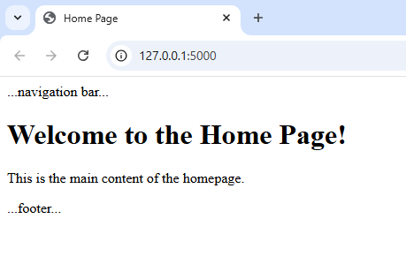
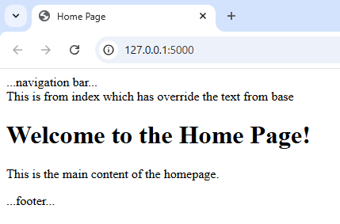

In the last chapter, we saw that we can return HTML from our route functions like below:
@app.route('/') def index(): return "<h1>Hello</h1>"
But this isn't the best way of doing it. What we can do instead is return a template.
A template is just a HTML file. Using template in flask app is a powerful way to build dynamic web pages using HTML combined with Python logic.
Flask uses Jinja2 as its templating engine, which lets you embed Python-like expressions directly into your HTML files.
Flask looks for templates in a folder named templates by default. So first in your project directory just create a folder called templates. You can create your .html files here.
/your-app
├── app.py
└── templates/
└── index.html
We can edit this index.html to load the HTML from templates. templates/index.html:
<!DOCTYPE html> <html> <head> <title>Welcome</title> </head> <body> <h1>Hello, User!</h1> <p>This page rendered using Flask templates.</p> </body> </html>
And finally, we can load these HTML using the render_template() function to serve HTML files.
from flask import Flask, render_template app = Flask(__name__) @app.route('/') def home(): return render_template('index.html') if __name__ == '__main__': app.run(debug=True)
So this allows us to keep our Python code separate from the HTML, because they're two completely different languages.
The most common thing that you'll use inside of a template other than HTML will be variables.
Template variables are the dynamic values you pass from your Python code to your HTML templates using the render_template() function.
🧠 How Template Variables Work
Flask uses Jinja2 as its templating engine.
In your Python route, you use render_template("template.html", variable=value) to pass data.
Inside your HTML template, you access that data using double curly braces:
{{ variable }}.
🛠 Example
Python (Flask route):
from flask import Flask, render_template app = Flask(__name__) @app.route("/") def index(): return render_template('index.html', page_name="index")
Now the template will have access to a variable called page name.
The way to bring the variable into the template is to use two curly brackets and then the name of the variable.
HTML (index.html):
<!DOCTYPE html> <html> <body> <h1>The name of this page is: {{ page_name }}</h1> </body> </html>
Output
The name of this page is: index
Note: We can pass multiple Variables.
return render_template("profile.html", username="Alex", age=30, hobbies=["reading", "cycling"])
Example 1
🧪 Flask Route (app.py)
from flask import Flask, render_template app = Flask(__name__) @app.route('/') def home(): return render_template('index.html', number=10) if __name__ == '__main__': app.run(debug=True)
🖼️ Template (templates/index.html)
<!DOCTYPE html> <html> <body> {% if number > 20 %} <h1>{{ number }} is greater than 20</h1> {% else %} <h1>{{ number }} is less than 20</h1> {% endif %} </body> </html>
Example 2
🧪 Flask Route (app.py)
from flask import Flask, render_template app = Flask(__name__) @app.route('/') def home(): user = { 'name': 'Aarav', 'logged_in': True } return render_template('index.html', user=user) if __name__ == '__main__': app.run(debug=True)
🖼️ Template (templates/index.html)
<!DOCTYPE html> <html> <head> <title>Welcome</title> </head> <body> {% if user.logged_in %} <h1>Welcome back, {{ user.name }}!</h1> <p>Glad to see you again. Here's your dashboard.</p> {% else %} <h1>Hello, Guest!</h1> <p>Please log in to access your account.</p> {% endif %} </body> </html>
🔍 What’s Happening Here:
The user dictionary is passed to the template.
The {% if user.logged_in %} block checks if the user is logged in.
Depending on the result, it shows either a personalized welcome or a prompt to log in.
🧪 Flask Route (app.py)
from flask import Flask, render_template app = Flask(__name__) @app.route('/') def home(): return render_template('index.html', data=['Milk', 'Bread', 'Eggs']) if __name__ == '__main__': app.run(debug=True)
🖼️ Template (templates/index.html)
<!DOCTYPE html> <html> <body> {% for item in data %} <h1>{{ item }}</h1> {% endfor %} </body> </html>
We can include one template inside another using Jinja2’s {% include %} directive.
This is super useful for reusing components like headers, footers, navbars, or any HTML snippet across multiple pages.
🧱 Basic Example of include
Let’s say you have the following structure:
/templates ├── base.html ├── header.html ├── footer.html └── home.html
header.html
<header> <h1>My Flask App</h1> <hr> </header>
footer.html
<footer> <hr> <p><© 2025 My Flask App</p> </footer>
home.html
{% include 'header.html' %}
<h2>Welcome to the homepage!</h2>
<p>This is dynamic content.</p>
{% include 'footer.html' %}
app.py
from flask import Flask app = Flask(__name__) @app.route('/') def home(): return render_template('home.html') if __name__ == '__main__': app.run(debug=True)
Output:
My Flask App Welcome to the homepage! This is dynamic content. © 2025 My Flask App
Inheritance allows you to create a base template and then build other templates on top of it. This helps you maintain a consistent layout across your web pages while keeping your code clean and modular.
🧬 What Template Inheritance Does
It lets you:
Define a common structure (like headers, footers, navigation bars) in one file.
Create child templates that reuse this structure and override specific parts.
🛠 Example
🗂️ Base Template Example (base.html)
<!DOCTYPE html> <html> <head> <title>{% block title %}{% endblock %}</title> </head> <body> <nav> ...navigation bar... </nav> {% block content %}{% endblock %} <footer> ...footer... </footer> </body> </html>
🧬 Child Template Example (home.html)
{% extends "base.html" %}
{% block title %}Home Page{% endblock %}
{% block content %}
<h1>Welcome to the Home Page!</h1>
<p>This is the main content of the homepage.</p>
{% endblock %}
🚀 Flask App Setup
from flask import Flask app = Flask(__name__) @app.route('/') def home(): return render_template('home.html') if __name__ == '__main__': app.run(debug=True)
Output:

How Child Templates Override Base Blocks
So far, we have seen we that are not writing anythin in base.html block. we are just leaving it as:
{% block content %}{% endblock %}
Even if we write anything in this block, the child template will override the content. Lets understand it by an example
🗂️ Base Template (base.html)
<!DOCTYPE html> <html> <head> <title>{% block title %}{% endblock %}</title> </head> <body> <nav> ...navigation bar... </nav> {% block intro_message %}This is from base template{% endblock %} {% block content %}{% endblock %} <footer> ...footer... </footer> </body> </html>
🧬 Child Template Example (home.html)
{% extends "base.html" %}
{% block title %}Home Page{% endblock %}
{% block check %}
This is from index which has overridden the text from base
{% endblock %}
{% block content %}
<h1>Welcome to the Home Page!</h1>
<p>This is the main content of the homepage.</p>
{% endblock %}
Output:

{{ super() }} is a special function used inside a block to include the content from the parent template’s block.
🔍 Why Use super()?
When you override a block in a child template, the original content from the parent template is replaced. But sometimes, you want to keep the original content and add to it—that’s where super() comes in.
🧪 Example - base.html
{% block footer %}
<p>© 2025 My Website</p>
{% endblock %}
child.html
{% extends "base.html" %}
{% block footer %}
{{ super() }}
<p>Contact us at support@example.com</p>
{% endblock %}
Result:
<p>© 2025 My Website</p> <p>Contact us at support@example.com</p>
In Flask templates (which use the Jinja2 engine), you can add comments in two distinct ways:
🧾 1. Template Comments
{#
{% for item in items %}
<p>{{ item }}p>
{% endfor %}
#}
These are comments that are only visible in your template code and do not appear in the rendered HTML. Use this for internal notes, explanations, or reminders in your template logic. This is handy during development when testing different template behaviors.
🌐 2. HTML Comments
<!-- This is an HTML comment. Users can see this in the page source. -->
Use this if you want to leave notes for front-end developers or debugging hints that are okay to be public.
Static files refer to assets like CSS, JavaScript, images, fonts, and videos that don’t change dynamically and are served directly to the browser.
📁 Folder Structure
your_project/
│
├── app.py
├── static/
│ ├── style.css
│ ├── script.js
│ └── images/
│ └── logo.png
└── templates/
└── index.html
🔗 Linking Static Files in Templates
Use Jinja2’s url_for() function to link static files in your HTML:
base.html
<html> <head> {% block css %} <link rel="stylesheet" href="{{ url_for('static', filename='style.css') }}"> {% endblock %} {% block js %} <script src="{{ url_for('static', filename='script.js') }}"></script> {% endblock %} </head> <body> ... </body> </html>
We have added static files inside base.html so that every html file can use it if it extends the base.html file.
You can directly add css or JS directly in any html page using:
<!-- 🎨 Linking CSS -->
<link rel="stylesheet" href="{{ url_for('static', filename='style.css') }}">
<!-- ⚙️ Linking JS -->
<script src="{{ url_for('static', filename='script.js') }}"></script>
<!-- 🖼️ Displaying an image -->
<img src=="{{ url_for('static', filename='images/logo.png') }}" alt="Logo">